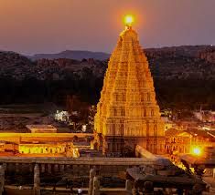
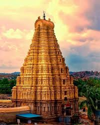

About Virupaksha Temple
Sri Virupaksha Temple, dedicated to Lord Shiva, stands as one of India’s oldest living temples. With a history spanning more than a millennium, it remains the spiritual heart of Hampi, Karnataka. Its rich culture, architecture, and traditions continue to attract devotees and visitors from all over the world.The temple began as a small 7th-century shrine on the banks of the Tungabhadra River. Over time, under the Chalukyas, Hoysalas, and especially the Vijayanagara Empire, it expanded into the magnificent complex seen today. The towering gopuram, carved stone pillars, mandapas, and inner sanctum reflect classical Dravidian architecture. Even after Hampi’s destruction in 1565, Virupaksha Temple remained untouched and continued regular worship — making it unique among the monuments of the region. Today, it remains active with daily rituals and grand festivals like Rathotsava, Pampa Festival, and Maha Shivaratri, drawing thousands of devotees every year. Recognized as part of the UNESCO World Heritage Site of Hampi, Virupaksha Temple stands not only as a monument of history but also as a symbol of living heritage, devotion, and timeless Indian culture.
Origins & Sacred Significance
The temple’s origin dates back to the 7th century as a small shrine on the banks of the Tungabhadra River. It grew into a major pilgrimage centre dedicated to Lord Virupaksha, considered the consort of Goddess Pampa. The sanctuary existed well before the founding of the Vijayanagara capital, and ancient inscriptions of the 9th–10th century refer to Shiva worship on this site.
According to epigraphical and archaeological evidence, the initial shrine was expanded under the Chalukya and Hoysala dynasties, though the majority of the existing temple complex is attributed to the Vijayanagara period. Despite the destruction of the city in 1565, the temple remained intact and worship has continued without interruption — making it one of the few ancient temples in India still active since its inception.

Vijayanagara Empire Expansion
Under the Vijayanagara Empire (1336–1565 CE), the temple complex was significantly expanded by the rulers, including Krishnadevaraya. The majestic eastern gopuram, pillared halls and cloisters were added, transforming the temple into the magnificent monument observed today.
The nine-tiered eastern gateway rises to about 50 metres, anchoring the outer court. According to inscriptions, King Krishnadevaraya commissioned the central pillared hall in 1510 CE, enabling the temple to host royal ceremonies, music, dance and festivals. The expansion deeply reflects the empire’s devotion and architectural ambition.

Architectural Marvel
The temple is a striking example of Dravidian architecture featuring soaring gopurams, intricately carved pillars and stone corridors. Its design even incorporates fractal-like patterns and a mathematical precision seldom seen in ancient structures.
One of the most striking features is the usage of repeated patterns that suggest fractal geometry. The sacred complex includes the Manmatha tank and a small channel of the Tungabhadra flowing through the temple terrace, enhancing both ritual significance and aesthetic harmony.

Major Festivals
The temple hosts many important festivals including the annual car festival (Rathotsava), Pampa Festival and Maha Shivaratri, attracting thousands of devotees from across India.
The Rathotsava involves pulling a grand wooden chariot through the streets of Hampi. On Pampa Festival the temple shines with lamps and musical programmes honouring Goddess Pampa. During Maha Shivaratri devotees fast, chant through the night and witness the grand abhisheka rituals at the lingam.
Living Heritage
As part of the UNESCO-listed Group of Monuments at Hampi, the temple remains a vibrant centre of worship and cultural heritage — the only major temple in Hampi still used continuously since its founding.
Despite the destruction of the Vijayanagara capital, Sri Virupaksha Temple was never abandoned. It remains an active temple and draws pilgrimage and tourism alike. Its status as a living heritage site has been recognised by UNESCO as part of the Hampi monument complex, ensuring it continues to be preserved for future generations.
